AIまとめ（登壇者本人の確認なし）
Zoomの自動字幕と、それをもとにした実況投稿から、AIがまとめ、別のAIが字幕と突き合わせて確認したものです。登壇者ご本人の確認は受けていません。字幕の誤認識などにより、内容に誤りを含むことがあります。スライド画像は配信画面から切り出したものです。
生物学者の鈴木さんは、観察から始める「ナチュラリスト」の立場から、意識を生物進化の中で考えるアプローチを紹介しました。まず、翻訳した動物倫理の本にふれながら、人工意識の倫理で押さえておくべき点（有感性と知性の区別、基準攻略問題、リスクの非対称性）を説明。次に、ファインバーグ＆マラットとギンズバーグ＆ヤブロンカという二つの進化生物学的アプローチに共通する前提として、「感覚運動表象系」と「価値予測系」の二つの系が結びつくこと（カップリング）を取り出しました。そこから、価値づけられた世界モデルは必然的に予測的になり、意識をもつエージェントはそれを主観的世界として経験する、と論じました。さらに、能動的推論に残る「組み合わせ問題」を、集合的予測符号化（CPC）を多細胞化に当てはめることで回避する構想と、より生命っぽい人工意識を作る構想を示しました。質疑では、なぜ生物学的自然主義なのか、メタ認知はどこから来るのか、などが議論されました。
1. 「辺縁」にある意識の倫理と政策
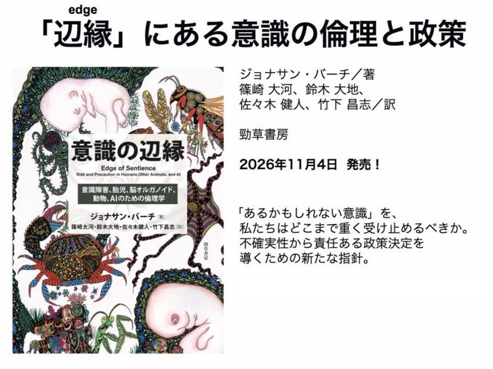
配信画面より
- 鈴木さんは、昨日から参加していて、猛獣たちが戦っているコロシアムの中に放り込まれるような気分だ、と語って話を始めた。
- 動物倫理も手がけ、イギリスでタコの実験やタコを食べるときの倫理的規制を実際に政策として提言した人物の一人であるジョナサン・バーチの、意識があるかないかわからないものの倫理と政策についての本を翻訳し、出版されることになったと紹介した（会場に見本があるので、ぜひ手に取ってほしい、とも）。
- 鈴木さん自身は、LLMに意識はないと思っている。ただ、あると思っている人たちは、もっと真剣に考えた方がいい。意識があるなら苦しむ主体がいるということで、本気でそう思うなら、責任ある政策決定に向けて今すぐ議論を前に進めてほしい、と述べた。
- 本には人工生命・人工意識・人工有感性の可能性に関するパートもあり、そこはAI倫理の専門家である竹下さんがメインで訳したという。
2. 人工意識の倫理：知性ではないこと、基準攻略問題、リスクの非対称性
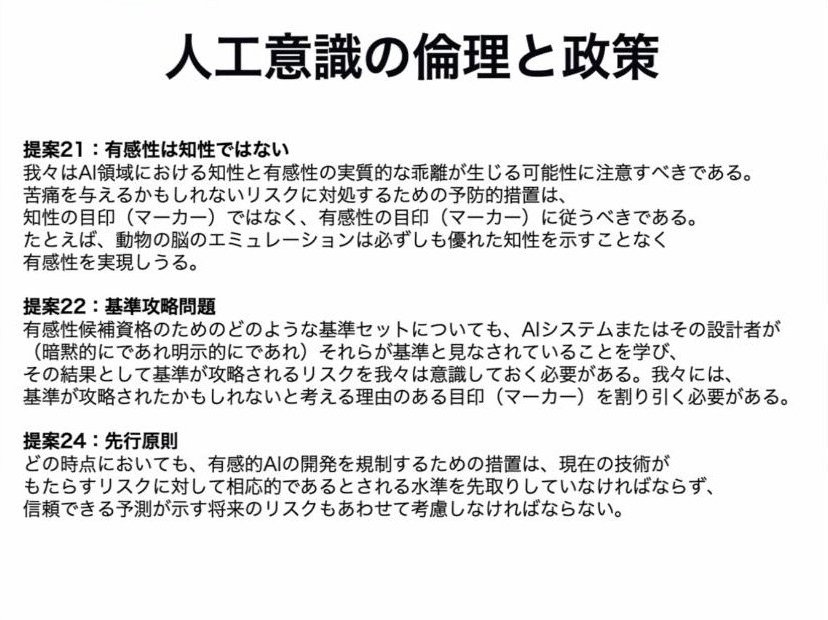
配信画面より
- LLMの倫理を考えるうえで重要なのは、まず、有感性（意識）は知性ではないということ（前日にも出た話だという）。
- より重要なのが「基準攻略問題（ゲーミング・プロブレム）」と「先行原則」。基準がわかっていれば、エンジニアリングですぐにその基準に合うように作れてしまう。それはずるで、基準を攻略しただけなら割り引いて考えなければならない。
- 科学的な推論として本当にあるかないかを判断するときは、偽陽性と偽陰性は対称で、どちらでもよい。しかし倫理の文脈では偽陰性の方がリスクが大きい。実際に苦しんでいるのに苦しんでいないとして殺してしまうのは倫理的に悪いが、苦しむ能力がないのに保護するのは、余計なコストがかかるだけだからだ。
- だから倫理では、厳密な科学的推論のときより、ある程度広めに取って保護しないとまずい。広げすぎもまずいし、科学的推論がどうでもいいわけではないが、まずこのリスクの非対称性を認識したうえでどうするかだ、と述べた。
3. ナチュラリストの態度
- 自分の意識に対する立場は、前日にさんざん攻撃された生物学的自然主義に非常に近く、そうくくられても構わないという。ただ、それは哲学的な立場の帰結というより、そもそもの態度、「ナチュラリスト・アティチュード」の問題だと説明した。ナチュラリストは自然主義者でもあり、博物学者という意味でもある。
- 意識研究をしているのは理工系の人が多く、数式が好き、あるいは数式に憧れがあって、IITや自由エネルギー原理のような数式理論が先行している（自分も最近、自由エネルギー原理は結構いいと思っている、とも）。それはイデア的な世界にいるプラトン的な人たちで、自分はどちらかというとアリストテレス的で、地に足のついた自然の観察から始めたい、と語った。
- 本業は生物学者で、大学1年生に解剖を教えるときも、ネットに書いてあることではなく、目の前の標本をちゃんと観察して、そこからわかることを導き出しなさい、と教えているという。
- 池上さんが問題提起した、LLMが出てきて研究が変わるかという点については、アリストテレス側はそれほど変わらない気がするという。現実世界は情報過多で、生物学はもともとビッグデータやバイオインフォマティクスを普通に使っている。エージェントが出てきてくれたら助かるし、ツールでも同僚でも、仲間が増える分には全然いい。博物学は死なない、と述べた。
4. 観察から始める：意識をどこまで帰属させるか
- 自然科学者としての観察で言えば、自分は今、意識を持っている。意識の中に現れるさまざまな対象に意識があるかは原則わからないが、ペンや死んだ木に意識があると考えるのは、余計な仮説を持ち込むことになる。なるべく余計なことを入れず、必要そうなら入れるのが科学的だと思う、と語った。
- 生き物は、死んだ木やテーブルとは違いそうだが、そこに意識を帰属させてよいかはまだわからない。生物の中にも、意識がありそうなものとなさそうなものがいる。生物は全部意識があると考える人もいて、それも一つの仮説だが、なるべく倹約的に帰属させない立場で考えれば、まずはそこまで広げずに考えたい、という。
- 自分の意識を観察してみると、熟睡しているノンレム睡眠のときは意識がなくなり、夢では主観的な経験をしている。お酒を飲んで酩酊すると意識状態が少し変わる。
- 神がいきなり自分だけに意識を与えたとは思わない。生物学的なプロセスなら、意識は遺伝しているはずだ。自分の父や母にも、自分の子どもにも意識はありそうだ（起きているときはね、とも）。だから意識は遺伝可能な生物学的特性であり、進化的に考えましょう、ということになる、と述べた。
5. 生物進化から意識を考える
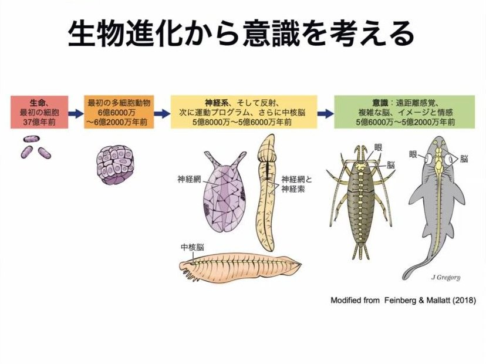
配信画面より
- 多細胞化して神経ができ、最初は散在神経系のようなネット状のものから、神経が集中して脳のようなものができていく。その中のどこかで意識が獲得された、と考えるのが自然科学的に妥当だろう、と進化生物学者として考えるという。では実際それはどこか、が大問題になる。
- それは生物だけの意識の話になるかもしれないが、そこから生物から離れた一般的な意識の理論もできるのではないかと考えている、と述べた。
- 進化的なアプローチを取る人の多くは、今、意識は複数の系統で獲得されたと考えている。節足動物（昆虫やエビ・カニ）、イカ・タコにもあってもよさそうだ。脳の形も構造も全然違うのに意識っぽいものができているなら、そこで共通する意識生成のメカニズムを明らかにできれば、系統に特有の意識だけでなく、より一般的な理解につながる。
- そのメカニズムをAIなどの機械に適用すれば、機械が意識を獲得するかもしれない。ただ、苦しみを生み出す主体を新たに作り出すことは倫理的に良くないので、やめた方がいいと思う、とも述べた。
6. 二つの進化生物学的アプローチ
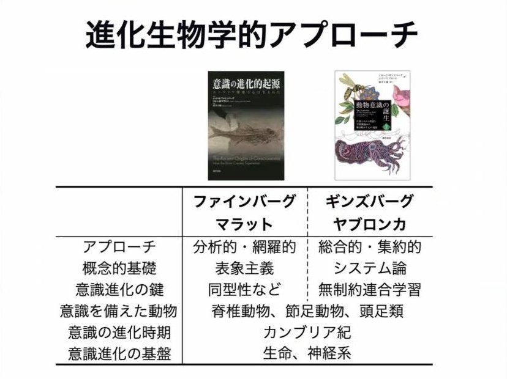
配信画面より
- ゴドフリー＝スミスのタコの議論などもあるが、理論的にしっかりした理論を打ち出しているのが、ファインバーグ＆マラットと、ギンズバーグ＆ヤブロンカの二つのグループ。幸いにも、両方とも鈴木さんが翻訳して出版できたという。
- 面白いのは、結論はかなり近いのに、具体的なアプローチは全然違い、むしろ相補的なこと。ファインバーグ＆マラットはリスト化して分析的・網羅的に考え、前日に信原さんが紹介したような表象主義に則っている。ギンズバーグ＆ヤブロンカは一つのマーカー（目印）に集約して、それがあるかないかで考え、システム論と呼ばれる枠組みに則っている。後者が意識進化の鍵と考えるのが「無制約連合学習」だ。
- そうした違いがありつつ、結論は収斂してきている。かつて意識がありそうな動物は、せいぜい哺乳類などに限られていたが、それがどんどん広がり、魚から哺乳類まで脊椎動物すべてにありそうという話になってきた。さらに、それまであまり考えられてこなかった昆虫やエビ・カニ、頭足類にもありそうだという話になっている。
- 意識が進化した時期は、これらの動物が出現した時期と考えれば、カンブリア紀ということになる。また両グループとも、意識を備えるには生きていることと神経系が必要だと考えている点で共通する。
- アプローチが違っても結論が同じなのが面白く、両者に共通していそうな前提を抽出すれば、一般的なメカニズムのようなものが出てくるのではないかと考えた、という。
7. 最小限の意識の「目印」
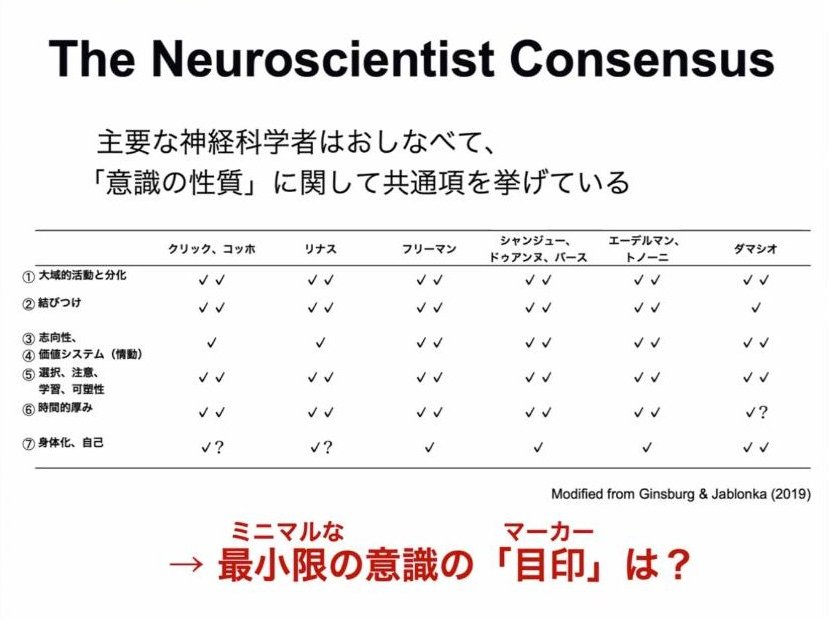
配信画面より
- ギンズバーグらによれば、人を含む生物の意識について、何が意識の重要な特徴かは合意が取れつつあり、彼女はこれを「ニューロサイエンティスト・コンセンサス」と呼んでいる。ここでは七つの特徴にまとめており、クリック、リナス、コッホらさまざまな神経科学者が、それぞれの立場から共通したことを言っているという。
- この七つを満たすようなミニマルな意識のマーカーを見つければ、それが進化で重要だったことになり、最小限の意識の条件にもなるかもしれない。
- ファインバーグ＆マラットはリスト的・網羅的なアプローチを取り、感覚受容系と情動系に分けてそれぞれ必要な条件を挙げる（意図したわけではないが、それらは七つの特徴のどれかに対応している）。そして膨大な生物学的知見を参照し、条件が当てはまりそうな動物とそうでない動物を整理する。脊椎動物はすべて当てはまり、節足動物も頭足類もほぼ当てはまる。それに基づき、脊椎動物、節足動物、頭足類の系統で意識が獲得されたと推論している、と説明した。
8. 無制約連合学習
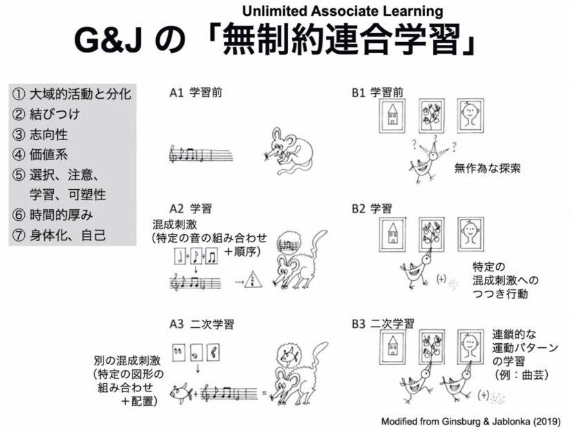
配信画面より
- ギンズバーグ＆ヤブロンカの無制約連合学習を、ざっくり説明した。例えば、コカ・コーラとペプシの違いを学習して、どちらが好きになる。そのときに起きているのは、ラベルと味という全然違う感覚の組み合わせの学習で、さまざまな飲み物を含めれば組み合わせは実質無限大だ。意識がない状態で飲み比べさせても、おそらくどちらが好きとは学習しない。こうした学習は意識がないとできない、と彼女らは考える。
- これができるということは、七つの条件が満たされていることになる。脳のさまざまな部位が大域的に活動しつつ、聴覚・視覚・味覚のように分化し、それを結びつけている。コーラという外の対象への志向性があり、好き嫌いという価値もある。注意を向けて選択し、学習して好みが変わることもある。一瞬ではできないので時間的な厚みが必要で、身体化・自己も関わってくる。
- ギンズバーグ＆ヤブロンカも、系統樹のどこに意識がありそうかを示しており、脊椎動物、節足動物、軟体動物の一部である頭足類、ということになるという。
9. 共通の前提：感覚運動表象系と価値予測系のカップリング
- 両方を翻訳した立場からすると共通点が見えてくる、と鈴木さん。それは七つの特徴よりもっと抽出した重要なところにあり、「感覚運動表象系」と「価値予測系」という二つの系だという。
- ファインバーグ＆マラットの場合、感覚受容系と情動系の分離にこれが対応し、両者が組み合わさらないとだめだと言っている。ギンズバーグ＆ヤブロンカも、無制約連合学習を実装する身体化された機能アーキテクチャーこそが心的表象（クオリア）の意味に近い、とし、無制約連合学習とは、動機づけに使う価値を、複数の要素が混合したマルチモーダルな感覚運動表象と結びつけ、それを学習に使うことだと言っている。
- つまり、この二つの系がまずあって、それが結びつく（カップリングする）ことが大事そうだと見えてきた、という。その背景にある神経メカニズムや神経回路のモデルについては、今日は割愛するとした。
10. 意識の創発メカニズム（？）
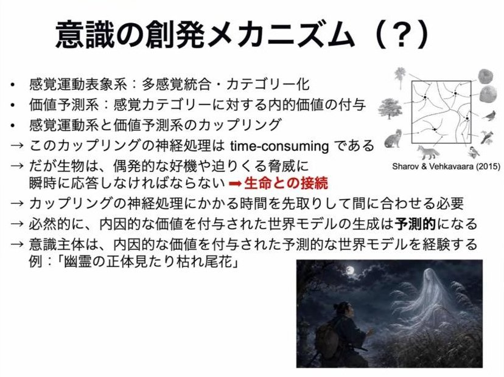
配信画面より
- なぜこれが意識に重要そうか、理屈をつけることができる、とここは丁寧に説明した。まず表象は多感覚統合で、組み合わせが無限大なので、カテゴリー化しなければならない。例えば鳥にとっての「止まり木」は、いろいろな木がある中で「これは止まれる」というカテゴリー化で、餌としてのベリー、仲間の鳥なども同じだ。
- それに対して、「捕食者なら逃げろ」「餌なら食べに行け」といった内的価値が付与される。これがカップリングだ。
- このカップリングは、神経回路で考えると非常に時間がかかる（LLMにやらせても計算に時間がかかる）。だが生物は、捕食者がいたら瞬時に逃げなければならない。「ちょっと待って、今考えているから」と言っていたら食べられる。偶発的なチャンスや迫りくる脅威に瞬時に応答しなければならないことが制約で、それが生命性との接続でもある、という。
- だから、時間がかかるのを逆に先取りし、間に合うように常に先行した計算をしていなければならない。この要請から、価値を付与された世界モデルは予測的にならざるを得ない。
- 言い換えれば、意識をもつエージェントは、価値を付与された予測的な世界モデルを、主観的世界として経験している。わかりやすい例が「幽霊の正体見たり枯れ尾花」。夜に野原を歩いているという身体的な条件のもとで、見えるものが怖いものに予測的に見えてくるが、よく精査するとそうではない。錯覚が主観的世界の中で起こるのはこうした理屈があるからで、そうすると、なぜ我々が主観的世界を持っているかにも、ある程度理屈がつけられると思う、と述べた。重要なのは予測と価値づけだという。
11. 機械も「錯覚」する
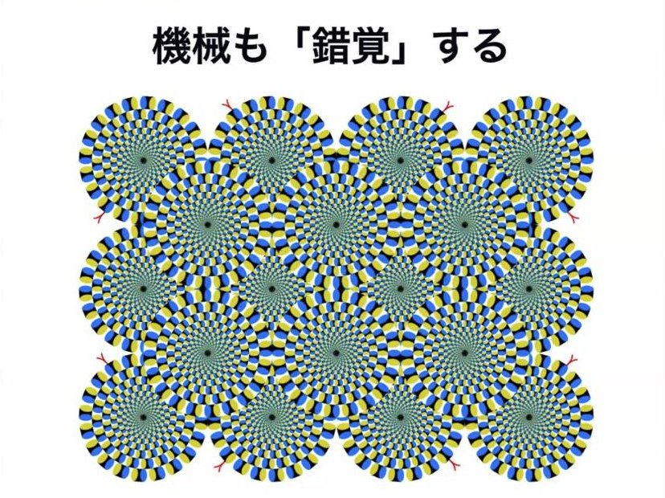
配信画面より
- 傍証として、機械が錯覚するという話を紹介した。基礎生物学研究所の渡辺英二さん（鈴木さんの元同僚）の仕事で、PredNetという深層学習モデルを使う。もともと自動運転用に開発されたもので、ドライビングデータを与えて、一瞬先（1フレーム先）の画像を予測させる。
- 人間が経験するような画像入力でやらせてみようと、ヘッドカメラをつけて歩くだけのビデオのデータセットを読み込ませ、一瞬先を推定させるようにした。
- テスト画像として「蛇の回転錯視」を与えると、人間に動いて見えるものは、機械も次のフレームで動くと予測した。少し変えて人間に動いて見えないようにしたものでは、機械もほとんど動かないと判断した。
- これは、少なくとも蛇の回転錯視に関しては、我々の錯覚にも動きの予測が関わっていて、予測的に見えていることを示唆する結果だ。一方で、この機械に意識があるかというと、多分そうではない、と述べた。
12. 価値（意味）の起源と、目的の段階
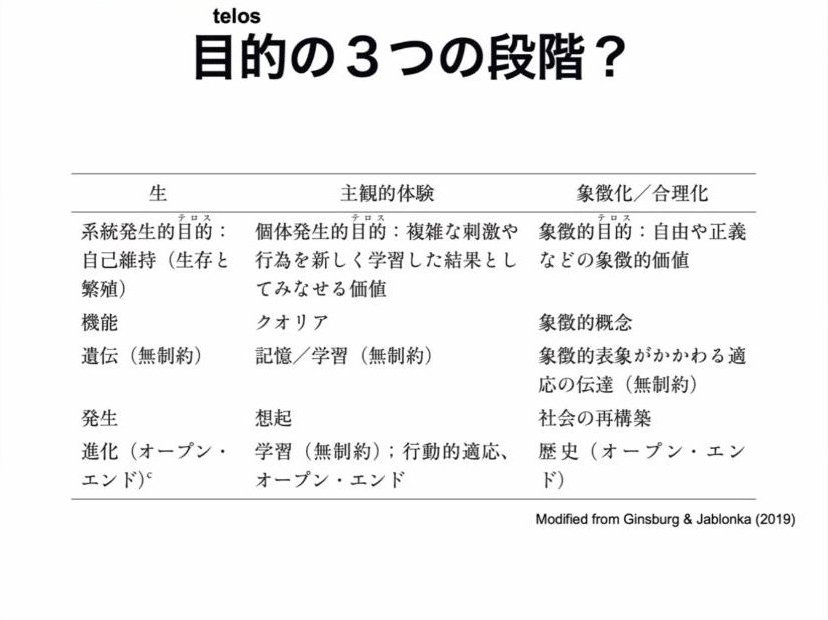
配信画面より
- では何が違うのか。もう一方の価値づけだ、と鈴木さん。LLMが意味をわかっていそうだという話があったが、それは人間が価値づけした言葉をすでに与えているからだという。パソコンを分解して意味を探しても、そこにはない。単なるモノだけからなる世界の中で、要素還元主義的なアプローチでは意味は出てこない。
- 意味や価値がどうやって出てくるのかは、意識を考えるうえでも、生命を考えるうえでも非常に重要だ。アメーバのようなものが何かを食べている様子を見ると、人間はどうしても意図性を感じてしまう。実際ありそうだし、単なるモノや死んだ木にはなさそうだ、と語った。
- 意識と生命の関係にはいろいろな考え方があるが、個人的にはギンズバーグ＆ヤブロンカの話に乗って、目的性（テロス）には段階がありそうだと考えている。生物的な目的性の上に、主観的体験をする個体として感じる欲求のような目的性が乗っている、という。
13. 能動的推論と「組み合わせ問題」
- それに結構整合的な、今使える理論が能動的推論だという。フリストンが言い始め、さらに自由エネルギー原理として原理化した。原理までいくかはともかく、脳がやっている推論も細胞の振る舞いも、能動的推論の枠組みで記述できるとフリストンは言っており、確かに面白く、生命と意識の共通性が出てきそうだ。数式理論にすると一種のベイズ推論のようになる。
- ただ、まだ行けていないところがある。細胞が能動的推論をしていて、ニューロンからなる脳も能動的推論をしているなら、その間はどうなっているのか。そこにはコンフリクトがありそうで、アラインメントをかけないといけない。
- これは意識の話に非常に重要で、単細胞生物にも意識がありうるなら、そういうものからできている我々は、なぜ統一された一つの主観的経験をしているのか、という話になる。それは「組み合わせ問題」と呼ばれる問題をどうするか、という話とパラレルだ、と指摘した。
14. 集合的予測符号化（CPC）と多細胞化
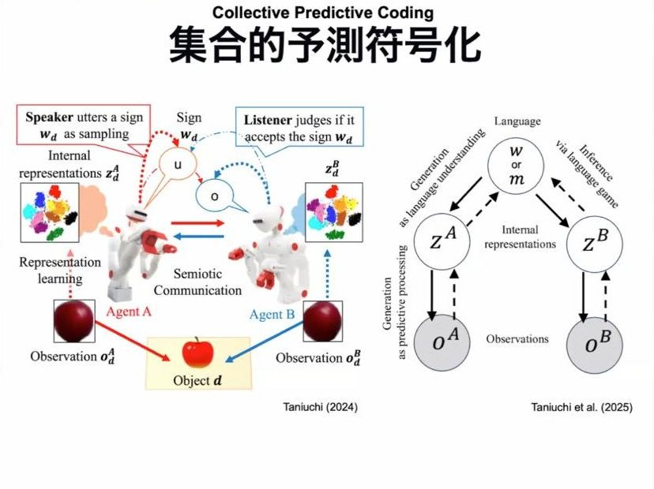
配信画面より
- そこで使えると考えているのが集合的予測符号化（CPC）。もともと言語が創発するときのモデルとして出てきたもので、ざっくり言えば、予測符号化をしている二つのエージェントが互いに情報を交換することで、言語のようなものが創発してくる。ここでの共通項はワード（W）あるいはメッセージ（M）で、ここではMとする。
- 多細胞になっていくときも、同じような集合的予測符号化をしているのではないか、と鈴木さん。単細胞で動いていたものが4つ、16個と増えていく系列が進化の中で成立していったという話がある。植物プランクトンなので光に寄っていくが、一個体はランダムに動きつつ、傾向として光に向かう。4つになると、それぞれがランダムな中の偏りで光に寄っていくので、そのままでは逆に非適応的になりかねない。
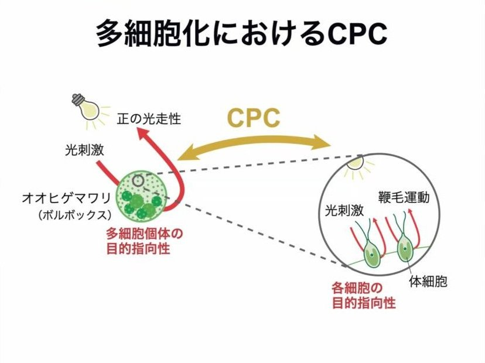
配信画面より
- これをうまく調停して一個体としてちゃんと光に向かっていくことは、各細胞の目的指向的な振る舞いを集合的に予測符号化していると見ることができ、CPCと非常に近い。CPCの理論的枠組みで記述でき、数理モデルとして考えられるのではないか、と考えているという。
- 重要なのは、メッセージの寄与がどれくらい大きいか。寄与が大きいと中央集権的に、小さいと分散的になる。多細胞化の段階ではまず寄与の小さい分散的なCPCが起こり、中枢神経のようなものができると、メッセージの寄与が高まっていく、と考えられそうだ。
- 重要なのは、下の段階では意識はなくてよいということ。下の段階の目的指向的な行動に意識はなくてよいが、CPCを起こした上の段階で意識的な目的指向性が生まれてくる、と考えれば、組み合わせ問題を回避できる。さらに、意識をもつ個体が社会のようなものを形成することで二段目のCPCが成立する。こうした入れ子状のCPCという考え方で、生命から社会の創発までを一つの枠組みで説明できるのではないか、これは面白いのではないか、と述べた。
15. 生命っぽい人工意識を作る構想
- 最後のスライドとして、時間がないので飛ばしつつ、構想を紹介した。単細胞として大腸菌の走化性モデルがある中で、それとオートポイエティックな身体性を持ったようなモデルを組み合わせ、まず単細胞のシングルエージェントとして予測符号化するものを作る。それをバイオCPCのようにシミュレーションしていけば、より生命っぽい人工意識のようなものが作れるのではないか、と構想しているという。
16. まとめのスライド
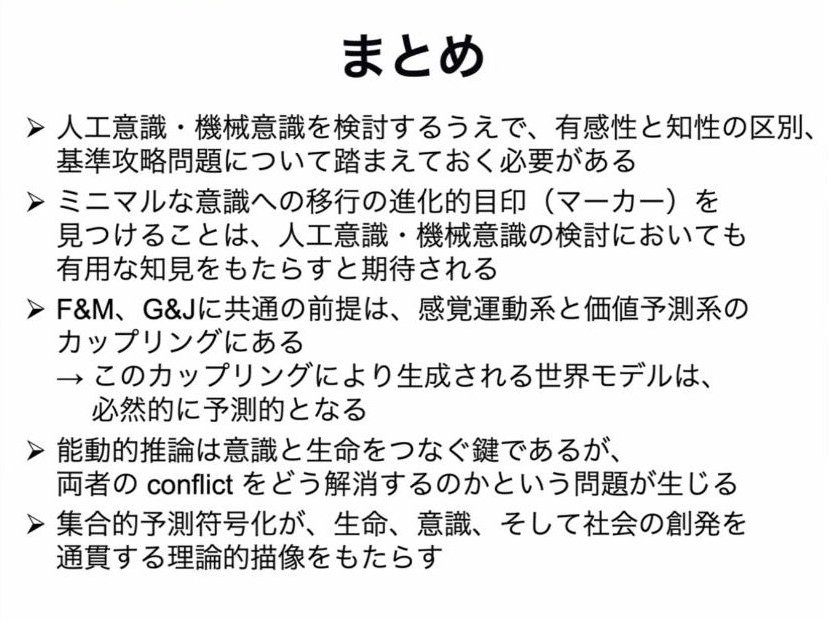
配信画面より（講演の最後に示された「まとめ」）
17. 質疑応答から
- 会場から、予測が意識に大事だという定式化は自由エネルギー原理の人たちの主張に近いと思うが、それを実装するのに生物でなければならない必然性が伝わらなかった、なぜ生物学的自然主義を掲げるのか、という質問が出た。鈴木さんは、ラベルは自分ではどうでもよく、自分のスタンスを位置づければ生物学的自然主義に割と近いというだけで、強い意味では言っていない、と答えた。生物っぽいものを作ろうとしているのは、意識がありそうなのがそういうものだから、まずそれに近いものを作ってみるというアプローチで、唯一の定式化だとも、生物っぽくシミュレーションするのが唯一のアプローチだとも思っていない。プラトンとアリストテレスの話でいうナチュラリストとして、生物学者としてまずより生命っぽいものでやってみたい、というぐらいのモチベーションだ、と。
- 会場から、多様な生物の意識を考えてAIの意識につなげるのは面白いが、メタ認知や、池上さんの言うエンドフィジックスのようなメタな視点は、単なる予測からどう出てくるのか、という質問。鈴木さんは、七つ目に身体性があることが重要で、メタ認知まで行かない身体性がまずあり、生物にはそもそも身体性がある（自由エネルギー原理の枠組みで言えばマルコフブランケットにあたる）と答えた。原初的な意識には、自己意識のようなものはなくてもいい。ただ、世界の中でエージェントとして立ち回り、生き残っていくうえでは、自分もこの世界の中の一個体なのだという認知があった方が多分適応的で、発展的な意識の中でそうしたものが生まれるのは全然おかしくなく、むしろ自然だと思う、と述べた。
- 会場から、ニューロサイエンスの立場で、生物に倣う（バイオインスパイアド）観点は大事だと思うが、トランスフォーマーはまったくバイオインスパイアドではないのに、デコーディングなどで脳との類似性が出てくる、結果を重視するのか、設計から生物に倣うべきなのか、という質問。鈴木さんは、何を目的にするか次第だと答えた。実社会でツールとして使うものを作るなら、生物に倣わない方が効率がよく優秀なら、それを使えばいい。でも自分が一番知りたいのは、自分の意識がどうやってできてきたかだ、と。生物に倣ったモデルは、工学的に言えば使えるものにはなっていないが、我々も使えるものとして生み出されたわけではない。そもそも目的が違う、と述べた。
- 会場から、人工生命の「ありうる生命（ライフ・アズ・イット・クッド・ビー）」のように「ありうる意識」という視点で考えると、生物に倣う方向では、生物とは別の形の意識が見えないのではないか、という問いも出た。鈴木さんは、それはそれでいいと思う、否定はしない、と応じた。
- さらに会場から、LLMが今動いて世界が変わっていることの方が大事で、社会や現実との関わりを増やしていく構成論的なアプローチが重要だ、頭で考えてチェック表を作っても、実際にやってみないとわからないのではないか、という意見が出た。なぜ物質的に同じかどうかにこだわるのか、という問いに、鈴木さんは、自分の観察から出発しようという態度だと応じた。ここで言う生物とは、細胞とDNAをもつ、いま観察している生物のことで、意識をもつにはそうでなくてもよい、というやりとりもあった。鈴木さんはまた、自分はまだLLMネイティブではないので、そうした考えに固執しているだけかもしれず、LLM以後の世代のナチュラリストは、バイアスなく見て「ありそうだ」と思えるのかもしれない、ただ自分は今のところそうは思えない、と述べた。
- 会場からは、意味が立ち上がるにはそのコミュニティに属していなければならず、外から見て考えることと、仲間に入って付き合う中で立ち上がってくる意味とは違う、意識は参加型の意味生成（パーティシパトリー・センスメイキング）でなければわからないのでは、それはエンドフィジックスの結論でもある、という指摘もあった。これに対し、物質にこだわっているというより、今ある生物を見ていけば、水中など、私たちが想像できない環境に適応した意識を見ることができ、そこに価値がある、という応答もあった。
- 議論の終わりには、現実世界を変えていく方向に進んだLLMは、ナチュラリスティックな態度で考える中でも考慮すべきものに入ってくる、という発言もあった。